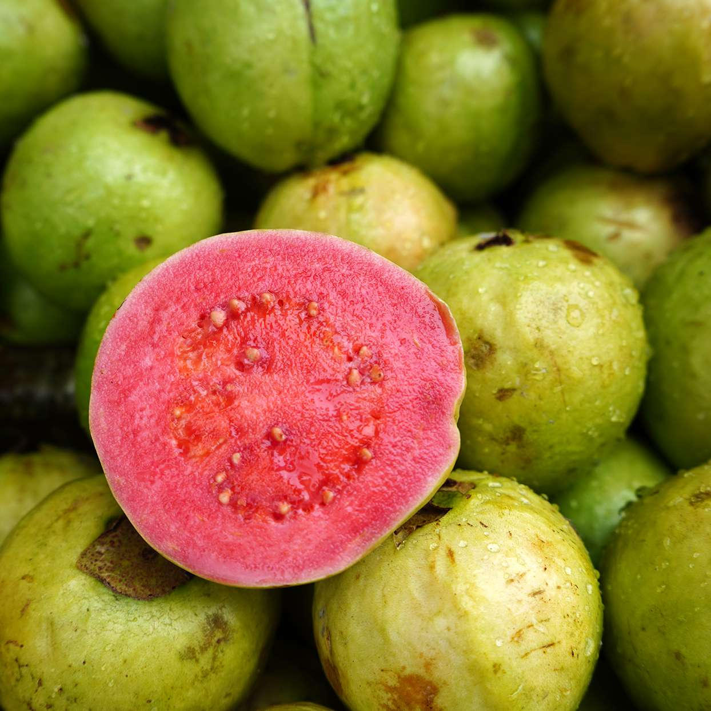

Clear Property
Without Clear
Mango
A mango is an edible stone fruit produced by the tropical tree Mangifera indica. It is believed to have originated between northwestern Myanmar, Bangladesh, and northeastern India. M. indica has been cultivated in South and Southeast Asia since ancient times resulting in two types of modern mango cultivars: the "Indian type" and the "Southeast Asian type". Other species in the genus Mangifera also produce edible fruits that are also called "mangoes", the majority of which are found in the Malesian ecoregion.
With Clear
Mango
A mango is an edible stone fruit produced by the tropical tree Mangifera indica. It is believed to have originated between northwestern Myanmar, Bangladesh, and northeastern India. M. indica has been cultivated in South and Southeast Asia since ancient times resulting in two types of modern mango cultivars: the "Indian type" and the "Southeast Asian type". Other species in the genus Mangifera also produce edible fruits that are also called "mangoes", the majority of which are found in the Malesian ecoregion.
Clearfix Difference

Guava is a common tropical fruit cultivated in many tropical and subtropical regions. The common guava Psidium guajava (lemon guava, apple guava) is a small tree in the myrtle family (Myrtaceae), native to Mexico, Central America, the Caribbean and northern South America.
difference
Guava is a common tropical fruit cultivated in many tropical and subtropical regions. The common guava Psidium guajava (lemon guava, apple guava) is a small tree in the myrtle family (Myrtaceae), native to Mexico, Central America, the Caribbean and northern South America.